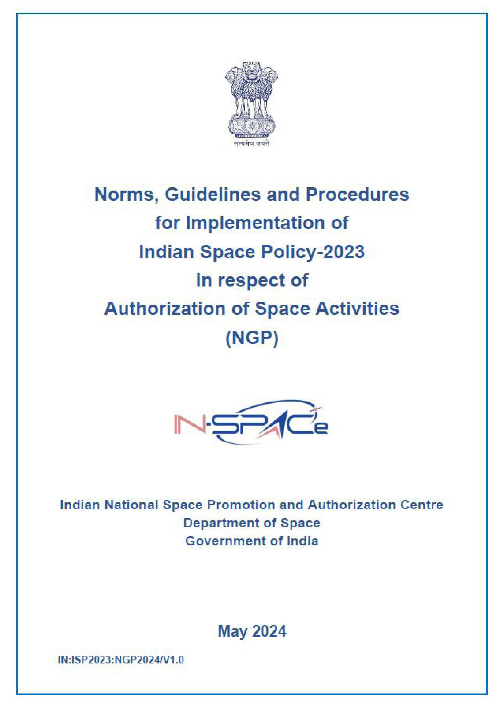
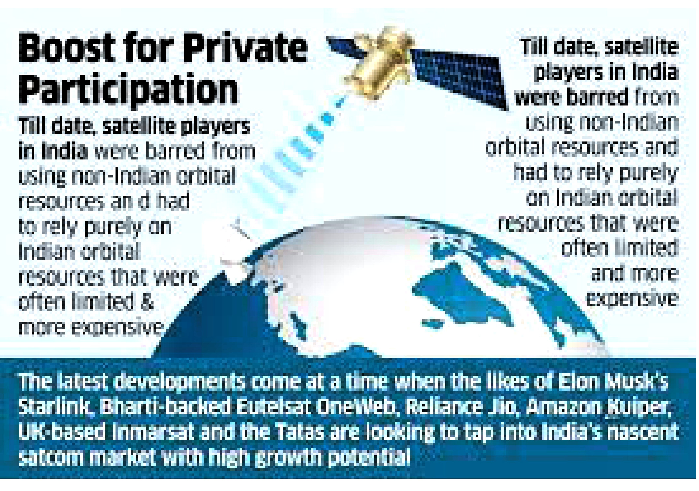
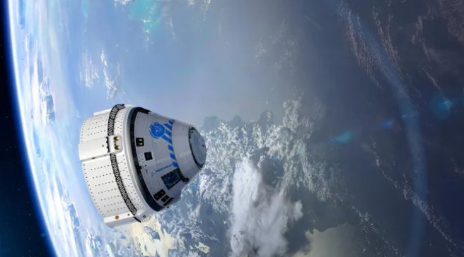
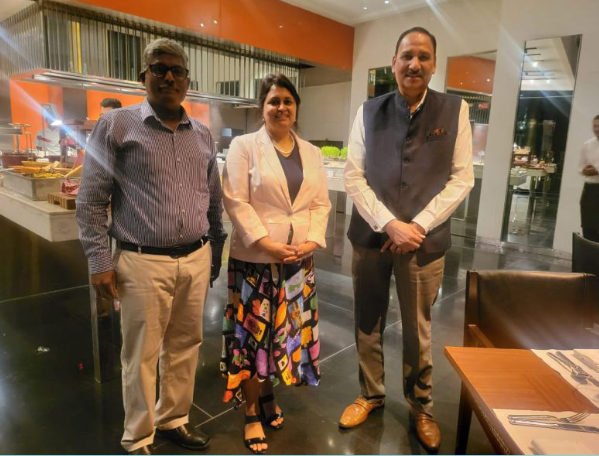
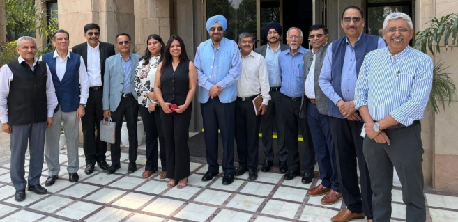
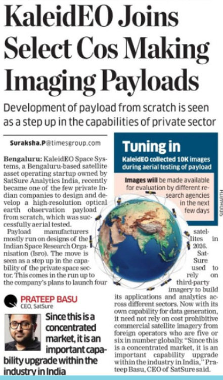
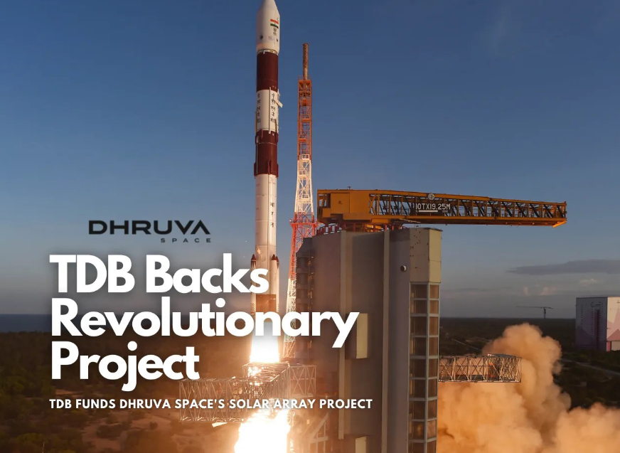
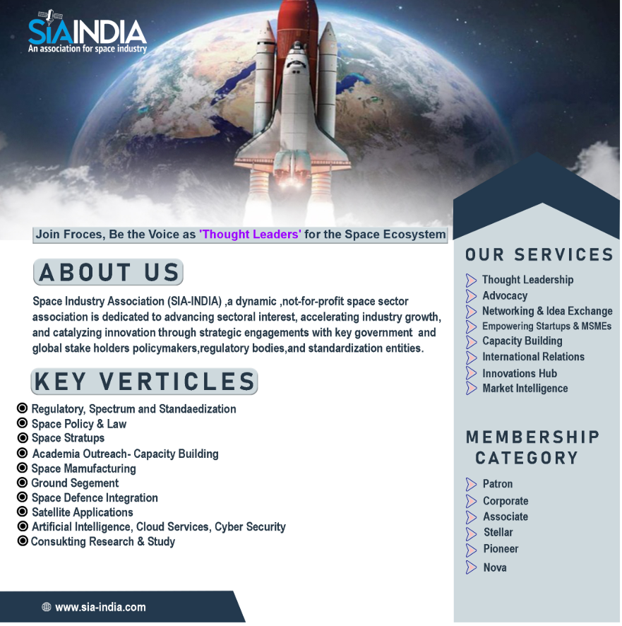

IN-SPACE releases guidelines for authorising space activities in India
IN-SPACe unveils detailed “Norms, Guidelines, and Procedures for Indian Space Policy 2023,” streamlining space activity authorization. Covering various aspects like general provisions, terms, and conditions, the guidelines facilitate authorization for space-based communication, remote sensing, orbital resource utilization, space transportation, ground systems, liability, and object registration.
Key highlights include the eligibility of non-Indian entities to apply through Indian counterparts, the utilization of surplus international satellite capacities by Indian entities, and the authorization requirements for both Indian-owned and non-Indian satellites operating
within Indian territory. Additionally, the guidelines ensure optimal resource utilization by permitting the transfer or subletting of rights to other Indian entities. Launch operators are mandated to maintain third-party liability insurance and adhere to space debris mitigation guidelines for safe and sustainable operations.
SIA also encourages its members to share their queries with us. These queries will be compiled and forwarded as a request for IN-SPACe to address during the India Space Congress-2024, scheduled from June 24-26 at The Lalit, New Delhi, India.


Technology and Innovation
Boeing–Starliner’s crew mission to take off soon

Recently, an Atlas V rocket is poised to launch with two seasoned astronauts, Barry Wilmore and Sunita Williams, aboard the Boeing-built crew capsule called Starliner. This marks
the capsule’s third test flight and the first with astronauts on board, aiming to transport them to the International Space Station (ISS) in low-earth orbit. Currently, the Dragon
spacecraft of SpaceX is the only spacecraft of US, that can return significant cargo to Earth and the first private spacecraft to transport humans to the space station. Starliner is a
spacecraft that carried astronauts to space, launched by a rocket, featuring a crew capsule for astronaut accommodation, designed for re-entry, and a non-reusable service module
providing life support and propulsion systems.
SIA-INDIA UPDATES
Women in ICT
Join us in celebrating Girls in ICT Day!
SIA-India is happy to be a part of this empowering initiative alongside the Department of Telecommunications ( DOT ), the International Telecommunication Union,
and the UN Country Team in India. The Girls in ICT Day initiative aims to encourage
girls and young women to pursue studying STEM, enhance their level of digital skill,
and raise awareness of meaningful and safe use of ICT.
DG SIA India meets Investment and Trade commissioner of Western Australia

SIA-India’s Director General, Mr. Anil Prakash, and Dy Director, Mr. Anbalagan
K, engaged in a fruitful discussion with Ms. Nashid Chowdhury, Investment and
Trade Commissioner for the India-Gulf Region, representing the Government
of Western Australia. The meeting, held with a focus on enhancing collaboration in the space sector, centered on the participation of a space industry
delegation at the upcoming mega event, the India Space Congress.
Updates from SIA India’s 2nd Defence
Committee Meeting

On 10th May 2024, second meeting of SIA-India’s Defence Space committee took place at the World trade Tower, New Delhi. The discussion centred
around the emergence of new battlefronts, namely space and cyber, along
with the challenges of global procurement, challenges and opportunities
for the private sector in space industry, NavIC, R&D and Capital Expenditure
(CAPEX) and Operational Expenditure (OPEX), focusing on securing the supply chain.
Members Columns
VISTAARNKSH joins the SIA Family
Vistaarnksh Pvt Ltd is an Indian startup, backed by strong engineering excellence,
they specialize in advanced radio systems for highly embedded applications such
as Sat-Com and Connected Vehicles. They provide comprehensive end-to-end
solutions, seamlessly integrating cutting-edge hardware and software technologies.Their expertise lies in crafting solutions that span the entire spectrum, from
robust hardware design and manufacturing to the development of sophisticated
software applications. This end-to-end capability allows Vistaarnksh to deliver tailor-made solutions that not only meet but exceed the expectations of clients
KALEIDEO JOINS SELECT COS MAKING
IMAGING PAYLOADS

SIA India's member KaleidEO Space Systems, owned by SatSure Analytics has
joined the ranks of a select few Indian private companies. They achieved this by independently designing, developing, and successfully testing a
high-resolution earth observation payload from the ground up.
Dhruva Space’s Solar Innovation: TDB Boosts Indigenous Tech
Leadership

Dhruva Space aims to revolutionise space-grade solar array fabrication with
advanced materials and innovative techniques, backed by TDB’s endorsement.
Become a member

DG Connect
While the Indian satellite communication market is valued at USD2.23 billion in the current year. It is expected to record a CAGR of 17.27% during 2024-2029, reaching USD 5.71 billion by the next five
years. And,the telecom players are flexing to further grab interests.
“Satellite technology today is at the same stage as mobile was 25 years ago, to drive its success in the country, satellite technology requires support and policy interventions that propelled the growth of
cellular mobile technology.”